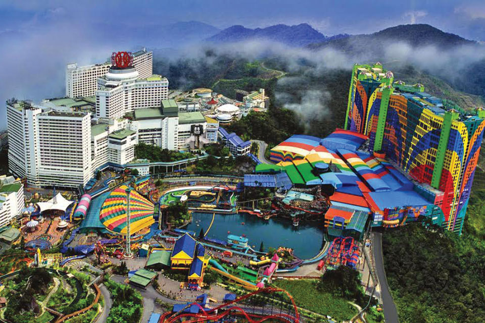

Genting Highlands, located in the Titiwangsa Mountains north of Kuala Lumpur, is a popular hill resort and entertainment destination. It offers a cool escape from the city heat, with attractions like Resorts World Genting, which includes casinos, shopping malls, and a variety of dining options.
Visitors can enjoy the Skytropolis Indoor Theme Park, featuring thrilling rides and games, and the newly opened Genting SkyWorlds Theme Park. Additionally, Genting Highlands is home to the Awana Skyway, a scenic cable car ride that provides breathtaking views of the surrounding rainforest and mountains.